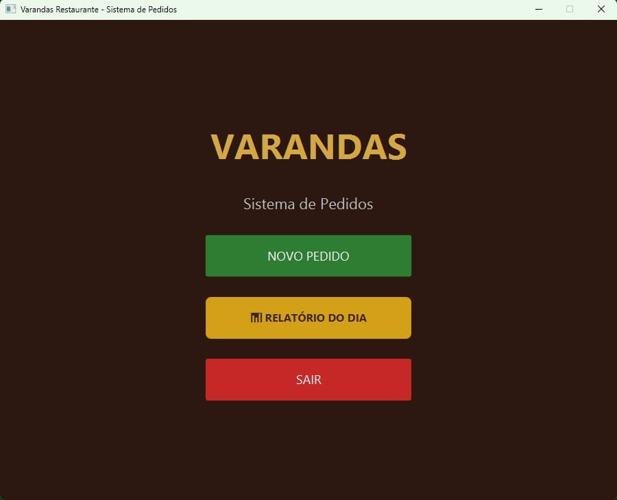
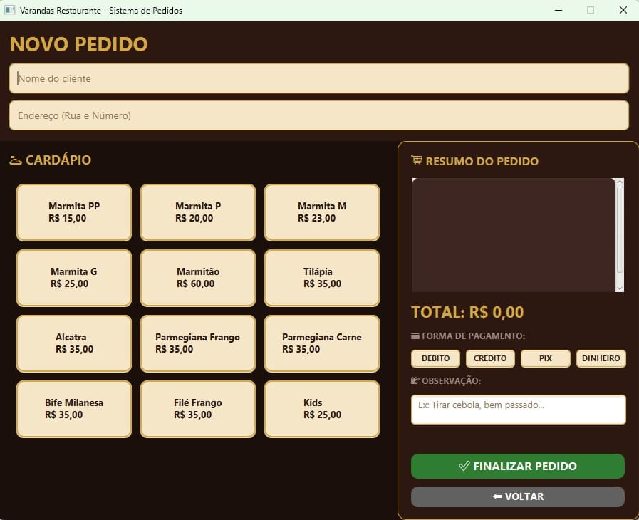
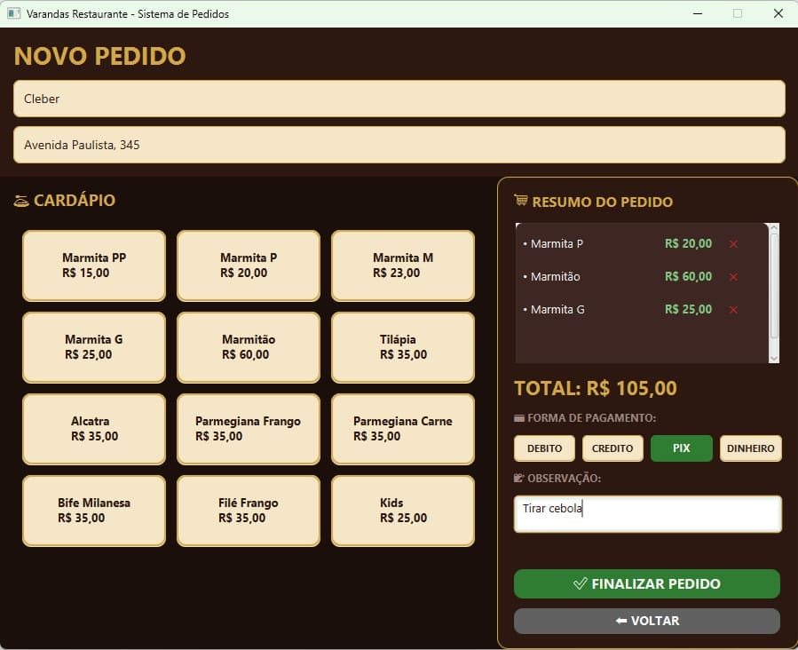
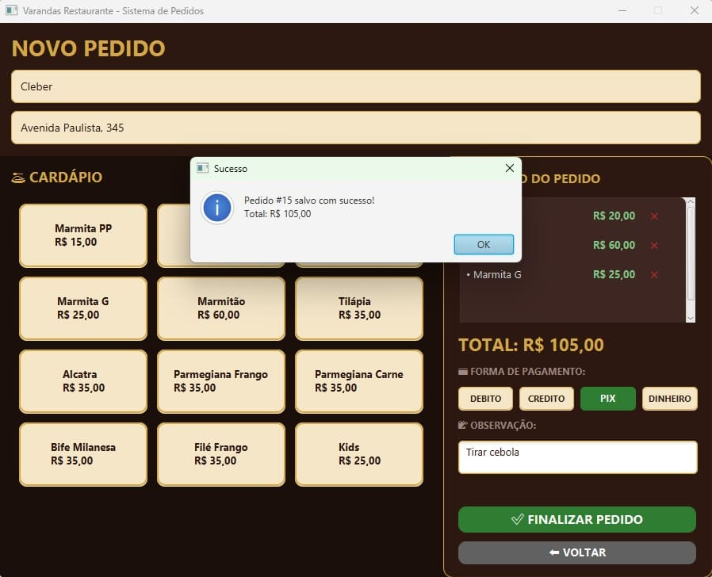
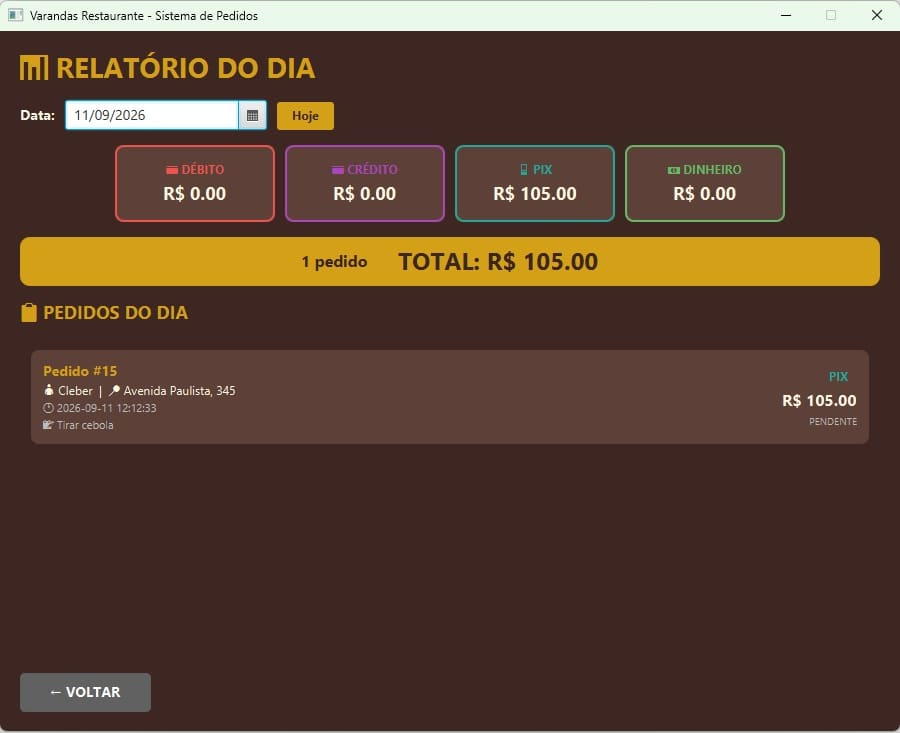

Sistema Varandas
Pronto — aguardando teste piloto
Capturas de tela





O problema
O Varandas, um restaurante de verdade, controlava pedidos, clientes e formas de pagamento no papel e em planilha solta — sem histórico organizado e sem um jeito rápido de emitir o comprovante do pedido pro cliente no balcão.
A solução
Um sistema desktop em Java com interface em JavaFX e persistência em SQLite. Cadastra e busca clientes, monta pedidos com os itens reais do cardápio do restaurante (marmitas em diferentes tamanhos, pratos feitos), registra a forma de pagamento, gera relatórios e imprime o comprovante direto na impressora térmica do balcão.
Como construímos
Começamos simples — um menu interativo no terminal, com persistência em arquivo, só pra validar a lógica de cadastro de clientes e pedidos. Depois de confirmar que a lógica de negócio fazia sentido, migramos a persistência pra SQLite e construímos a interface gráfica em JavaFX. A parte mais delicada foi a impressão térmica — enviar os comandos ESC/POS certos pra impressora se comportar como num sistema de PDV comercial. No fim, empacotamos tudo num instalador Windows com o runtime Java embutido, pensando em facilitar a instalação pra quem não sabe o que é Java.
Status
O sistema está pronto e empacotado, mas ainda não passou por um teste real na cozinha do Varandas — esse é o próximo passo antes de oferecer como produto fechado pra outros negócios.
Quer um sistema assim pro seu negócio?
Construímos sistemas de gestão sob medida pro seu fluxo de trabalho — não um software genérico que sobra funcionalidade e falta o que você realmente precisa.